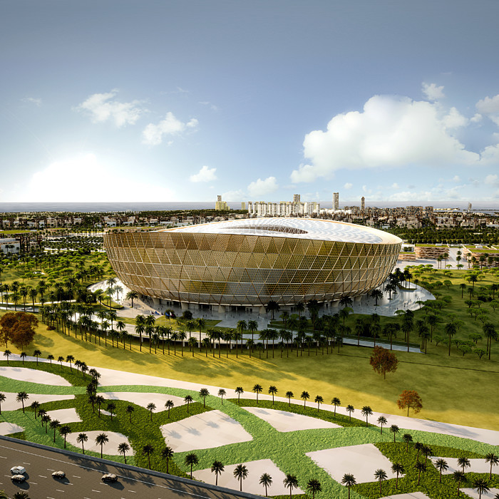

O Estádio Nacional Lusail , ou Estádio Icônico de Lusail (em árabe: ملعب لوسيل الدولي; Lusail Iconic Stadium em inglês) é um estádio de futebol localizado em Lusail no Catar, inaugurado em 22 de novembro de 2021. O Estádio de Lusail é propriedade da Associação de Futebol do Catar, é o maior estádio do país e dos oito estádios escolhidos para sediar a Copa do Mundo FIFA de 2022, recebendo dez partidas do torneio, dentre elas a final.
O processo para construção do estádio iniciou em 2014, sendo vencido pelo consórcio composto pela HBK Constructing (HBK) e China Railway Construction Corporation (CRCC). O estádio foi desenhado pela firma britânica Foster + Partners, para uma capacidade de 80.000 assentos. Como os demais estádios para a Copa do Mundo de 2022, o Estádio Nacional de Lusail será climatizado utilizando energia solar e tendo pegada de carbono zero. A construção foi iniciada em 11 de abril de 2017, com o fim previsto para 2020, acabou sendo adiado juntamente com os três amistosos que aconteceriam até a Copa do Mundo de 2022, torneio que terá dez jogos no estádio. Após a Copa do Mundo, prevê-se uma reconfiguração para 20.000 lugares. O excesso de assentos será removido e as partes liberadas serão ocupadas por espaços comunitários com lojas, cafés, academias, instalações educacionais e uma clínica médica.
O estádio sediará alguns jogos da competição, entre eles a final.
